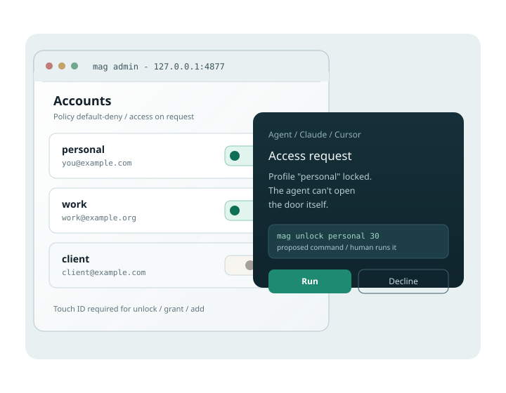

Local-first MCP server
Local MCP server (bin/google-mcp) that connects Claude, Cursor & co to your Google accounts — Gmail and Drive today, Calendar next — no third-party cloud, with locks and policy.

The problem
Typical Google MCPs open a single account, often far too wide. This product starts from a constraint: the agent can ask, never widen its own access.
Personal, org, client: each profile has its own policy, locks and Drive zones. The agent targets an alias, not “your Google” as a whole.
Nothing runs in a middleman SaaS. The only Google Cloud step is the one-shot creation of the OAuth credential.
How it works
MCP stdio for the LLM, the gwsa CLI and a local admin for you. Every door — unlock, grant, new account — stays a human gesture.
Claude Desktop / Claude Code / Cursor talk to bin/google-mcp. The tools discover profiles and request access cleanly.
Locked profile or missing Drive zone? The agent proposes the exact command. You (Touch ID optional) run it.
Undeclared service = denied. Drive writes limited to granted folders. Gmail tools stop at the draft.
Available now
Coming next
Security
The product stance: every access widening goes through you. The honest detail — limits included — is in the threat model.
Read SECURITY.md and the threat model.
Quickstart
macOS Apple Silicon today. Details and other clients are in the docs.
git clone https://github.com/elzinko/google-mcp-multi-account.git
cd google-mcp-multi-account
brew install googleworkspace-cli
ln -sf "$PWD/bin/gwsa" "$(brew --prefix)/bin/gwsa"
./scripts/provision-gcp.sh
./scripts/update.shThen restart Claude Desktop (Cmd-Q) and ask: “give me a rundown of my Google setup”. Full guide: README · docs hub.